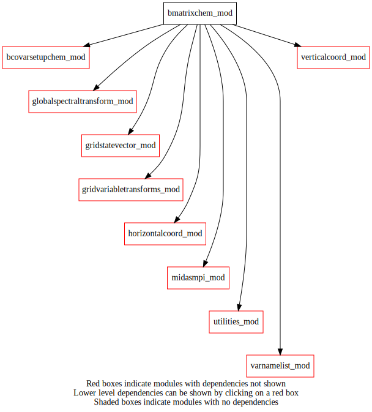
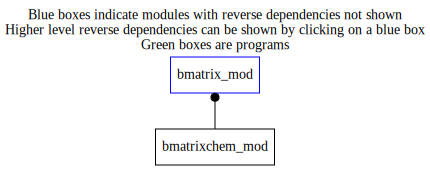

Dependency Diagrams:
 Direct Dependency Diagram¶
 Reverse Dependency Diagram¶
Description
MODULE BmatrixChem_mod (prefix=’bchm’ category=’2. B and R matrices’)
- Purpose
Contains routines involving the application of background-error covariance matrix(ces). Matrix based on horizontally homogeneous/isotropic correlations. This module includes the transform from control vector (spectral space) to analysis increments, related utilites, and the transform’s adjoint.
Based on elements of bmatrixHI_mod.ftn90
- Comments
Covariances uncoupled from weather variable.
One could potentially make public the functions/routines which are identical to those in bmatrixhi_mod.ftn90 (except possibly in name) so that one copy is present in the code.
Public Subroutines:
- bchm_setupCH: Must be called first.
Acquire constituents backgound error standard deviations and spectral space correlations which are read and prepared by bcsc_setupCH.
bchm_finalize: Deallocate internal module arrays. bchm_BSqrt: Transformations from control vector to analysis
increments in the minimization process.
bchm_BSqrtAd: Adjoint of bchm_BSqrt. bchm_expand* MPI manipulations of contol vector(s) bchm_reduce* MPI manipulations related to contol vector(s)
Quick access
- Routines
bchm_bsqrt(),bchm_bsqrtad(),bchm_cain(),bchm_cainad(),bchm_copyfromstatevector(),bchm_copytostatevector(),bchm_expandtompiglobal(),bchm_expandtompiglobal_r4(),bchm_finalize(),bchm_reducetompilocal(),bchm_reducetompilocal_r4(),bchm_setupch(),bchm_spa2gd(),bchm_spa2gdad()Needed modules
midasmpi_mod: MODULE midasMpi_mod (prefix=’mmpi’ category=’8. Low-level utilities and constants’)
gridstatevector_mod: MODULE gridStateVector_mod (prefix=’gsv’ category=’6. High-level data objects’)
gridvariabletransforms_mod: MODULE gridVariableTransforms (prefix=’gvt’ category=’4. Data Object transformations’)
globalspectraltransform_mod: MODULE globalSpectralTransform_mod (prefix=’gst’ category=’4. Data Object transformations’)
horizontalcoord_mod: MODULE HorizontalCoord_mod (prefix=’hco’ category=’7. Low-level data objects’)
verticalcoord_mod: MODULE verticalcoord (prefix=’vco’ category=’7. Low-level data objects’)
varnamelist_mod: MODULE varNameList (prefix=’vnl’ category=’7. Low-level data objects’)
utilities_mod: MODULE utilities_mod (prefix=’utl’ category=’8. Low-level utilities and constants’)
bcovarsetupchem_mod: MODULE BCovarSetupChem_mod (prefix=’bcsc’ category=’6. High-level data objects’)Variables
Subroutines and functions
- subroutine bmatrixchem_mod/bchm_setupch(hco_in, vco_in, cvdim_out)¶
- Arguments
hco_in [struct_hco ,in,pointer]
vco_in [struct_vco ,in,pointer]
cvdim_out [integer ,out]
- Called from
- Call to
bcsc_setupch(),bcsc_getcovarch(),gst_setup(),mmpi_setup_latbands(),mmpi_setup_lonbands(),mmpi_setup_m(),mmpi_setup_n(),gst_ilalist_mpiglobal(),gst_ilalist_mpilocal()
- subroutine bmatrixchem_mod/bchm_bsqrt(controlvector_in, statevector[, statevectorref_opt])¶
- Purpose
To apply B_CHM^1/2 to a control vector.
Based on bhi_bsqrt
- Arguments
controlvector_in (cvdim_mpilocal) [real ,inout]
statevector [struct_gsv ,inout]
- Options
statevectorref_opt [struct_gsv ,in,]
- Called from
- Call to
bchm_cain(),bchm_spa2gd(),bchm_copytostatevector(),vnl_varkindfromvarname()
- subroutine bmatrixchem_mod/bchm_bsqrtad(statevector, controlvector_out[, statevectorref_opt])¶
- Purpose
To apply adjoint of B_CHM^1/2 to a statevector.
Based on bhi_bSqrtAd.
- Arguments
statevector [struct_gsv ,inout]
controlvector_out (cvdim_mpilocal) [real ,inout]
- Options
statevectorref_opt [struct_gsv ,in,]
- Called from
- Call to
vnl_varkindfromvarname(),bchm_copyfromstatevector(),bchm_spa2gdad(),bchm_cainad()
- subroutine bmatrixchem_mod/bchm_cain(controlvector_in, hicontrolvector_out)¶
- Arguments
controlvector_in (cvdim_mpilocal) [real ,inout]
hicontrolvector_out (nla_mpilocal,2,bgstats%nkgdim) [real ,inout]
- Called from
- Call to
- subroutine bmatrixchem_mod/bchm_cainad(hicontrolvector_in, controlvector_out)¶
- Arguments
hicontrolvector_in (nla_mpilocal,2,bgstats%nkgdim) [real ,inout]
controlvector_out (cvdim_mpilocal) [real ,inout]
- Called from
- Call to
- subroutine bmatrixchem_mod/bchm_spa2gd(hicontrolvector_in, gd_out)¶
- Arguments
hicontrolvector_in (nla_mpilocal,2,bgstats%nkgdim) [real ,inout]
gd_out (mylonend-(mylonbeg)+1,mylatend-(mylatbeg)+1,bgstats%nkgdim) [real ,inout]
- Called from
- Call to
- subroutine bmatrixchem_mod/bchm_spa2gdad(gd_in, hicontrolvector_out)¶
- Arguments
gd_in (mylonend-(mylonbeg)+1,mylatend-(mylatbeg)+1,bgstats%nkgdim) [real ,inout]
hicontrolvector_out (nla_mpilocal,2,bgstats%nkgdim) [real ,inout]
- Called from
- Call to
- subroutine bmatrixchem_mod/bchm_copytostatevector(statevector, gd)¶
- Arguments
statevector [struct_gsv ,inout]
gd (mylonend-(mylonbeg)+1,mylatend-(mylatbeg)+1,bgstats%nkgdim) [real ,inout]
- Called from
- subroutine bmatrixchem_mod/bchm_copyfromstatevector(statevector, gd)¶
- Arguments
statevector [struct_gsv ,inout]
gd (mylonend-(mylonbeg)+1,mylatend-(mylatbeg)+1,bgstats%nkgdim) [real ,inout]
- Called from
- subroutine bmatrixchem_mod/bchm_reducetompilocal(cv_mpilocal, cv_mpiglobal)¶
- Arguments
cv_mpilocal (cvdim_mpilocal) [real ,out]
cv_mpiglobal (*) [real ,in]
- Called from
- Call to
- subroutine bmatrixchem_mod/bchm_reducetompilocal_r4(cv_mpilocal, cv_mpiglobal)¶
- Arguments
cv_mpilocal (cvdim_mpilocal) [real ,out]
cv_mpiglobal (*) [real ,in]
- Called from
- Call to
- subroutine bmatrixchem_mod/bchm_expandtompiglobal(cv_mpilocal, cv_mpiglobal)¶
- Arguments
cv_mpilocal (cvdim_mpilocal) [real ,in]
cv_mpiglobal (*) [real ,out]
- Called from
- Call to
- subroutine bmatrixchem_mod/bchm_expandtompiglobal_r4(cv_mpilocal, cv_mpiglobal)¶
- Arguments
cv_mpilocal (cvdim_mpilocal) [real ,in]
cv_mpiglobal (*) [real ,out]
- Called from
- Call to
- subroutine bmatrixchem_mod/bchm_finalize()¶
- Called from
- Call to
{kind=link}
{kind=link}